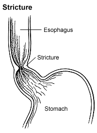

Peptic Stricture

SYMPTOMS:
Signs and symptoms associated with dysphagia may include:
- Having pain while swallowing (odynophagia)
-
Being unable to swallow
-
Having the sensation of food getting stuck in your throat or chest or behind your breastbone (sternum)
-
Drooling
-
Being hoarse
-
Bringing food back up (regurgitation)
-
Having frequent heartburn
-
Having food or stomach acid back up into your throat
-
Unexpectedly losing weight
-
Coughing or gagging when swallowing
-
Having to cut food into smaller pieces or avoiding certain foods because of trouble swallowing
CAUSES:
- Swallowing is complex, and a number of conditions can interfere with this process. Sometimes the cause of dysphagia can't be identified. However, dysphagia generally falls into one of the following categories.
DIAGNOSIS:
- X-ray with a contrast material (barium X-ray). You drink a barium solution that coats your esophagus, allowing it to show up better on X-rays. Your doctor can then see changes in the shape of your esophagus and can assess the muscular activity.
-
Your doctor may also have you swallow solid food or a pill coated with barium to watch the muscles in your throat as you swallow or to look for blockages in your esophagus that the liquid barium solution may not identify.
-
Dynamic swallowing study. You swallow barium-coated foods of different consistencies. This test provides an image of these foods as they travel through your mouth and down your throat. The images may show problems in the coordination of your mouth and throat muscles when you swallow and determine whether food is going into your breathing tube.
-
A visual examination of your esophagus (endoscopy). A thin, flexible lighted instrument (endoscope) is passed down your throat so that your doctor can see your esophagus. Your doctor may also take biopsies of the esophagus to look for inflammation, eosinophilic esophagitis, narrowing or a tumor.
-
Fiber-optic endoscopic evaluation of swallowing (FEES). Your doctor may examine your throat with a special camera and lighted tube (endoscope) as you try to swallow.
-
Esophageal muscle test (manometry). In manometry (muh-NOM-uh-tree), a small tube is inserted into your esophagus and connected to a pressure recorder to measure the muscle contractions of your esophagus as you swallow.
-
Imaging scans. These may include a CT scan, which combines a series of X-ray views and computer processing to create cross-sectional images of your body's bones and soft tissues, or an MRI scan, which uses a magnetic field and radio waves to create detailed images of organs and tissues.
TREATMENT
- Treatment for dysphagia depends on the type or cause of your swallowing disorder.